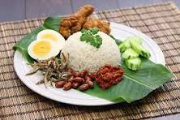

Nasi lemak is a rice dish commonly served with roasted nuts, egg, ikan bilis (anchovies), and slices of cucumber. Literally meaning “fatty rice” in Malay, nasi lemak’s distinctive taste comes from cooking the rice in coconut milk and pandan leaves which gives the dish its rich flavour and fragrant aroma. It is rounded off with spicy sambal – a chilli paste made from dried chilies, garlic, shallots, and belacan (shrimp paste).